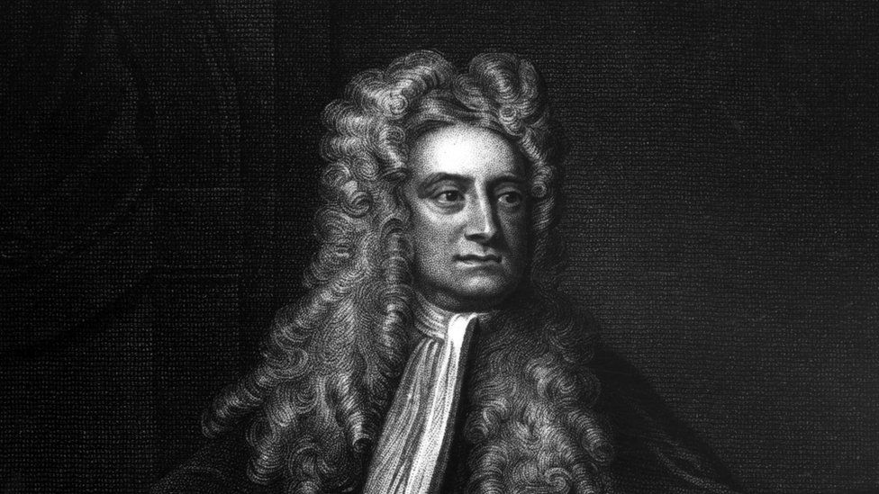

Isaac Newton
1642 - 1727
One of the most famous scientists of all time
Sir Isaac Newton was an English mathematician, physicist,
astronomer, theologian, and author (described in his time as a "natural
philosopher") who is widely recognised as one of the greatest
mathematicians and most influential scientists of all time and as a key
figure in the scientific revolution.

Drawing of Isaac Newton
The following list is a time line of Newton life
- 1642 - Birth of Isaac Newton in Woolsthorpe, England.
- 1646 - Hannah Newton remarries and moves away, leaving her son to be raised by an uncle.
- 1649 - Charles I beheaded by Cromwell and the Puritans.
- 1653 - Death of Hannah's second husband; she returns to live with Isaac, bringing three
children with her from her second marriage.
- 1654 - Newton enrolls in the Grantham Grammar School.
- 1658 - Death of Cromwell.
- 1660 - Charles II crowned King of England, Restoration begins.
- 1661 - Newton enrolls in Trinity College, Cambridge.
- 1662 - Founding of the Royal Society.
- 1665 - Newton receives his bachelor of arts from Trinity College.
- 1666 - Fire in London. Outbreak of plague drives Newton to retire to his mother's home
in Woolsthorpe. Newton conducts prism experiments, discovers spectrum of light; works out his system of
"fluxions," precursor of modern calculus; begins to consider the idea of gravity.
- 1669 - Newton appointed Lucasian Chair of Mathematics at Trinity, a position he will hold
for the next thirty-four years.
- 1672 - Newton elected to the Royal Society.
- 1672 - Newton's paper on optics and his prism experiments sent to the Society. Rivalry
with Hooke begins.
- 1670s - Newton works on the mathematics of gravitation in his home in Cambridge.
- 1674 - Hooke writes book in which he suggests existence of "attractive powers," akin to gravity.
- 1679 - Death of Hannah Newton.
- 1684 - Hooke discusses principle of inverse squares with Christopher Wren and Halley.
- 1684 - Halley goes to visit Newton in Cambridge, where they discuss the principle inverse
squares and its relationship with planetary orbits.
- 1684 - Newton completes his calculations on gravity and shares them with Halley, who urges him
to publish.
- 1685 - Newton sends a brief treatise, Propositiones de Motu, to the Royal Society, outlining
his findings.
- 1686 - Newton presents the first book of the Principia to the Royal Society.
- 1687 - Publication of the complete Principia.
- 1688-89 - Glorious Revolution in England. James II flees to France, William and Mary take the throne.
- 1689 - Newton elected as Cambridge's representative to Parliament.
- 1693 - Newton's "Black Year." He is plagued by depression and insomnia, and apparently suffers
a nervous breakdown in September.
- 1695 - NNewton appointed warden of the Mint, to oversee the implementation of a new currency. He
leaves Cambridge and moves to London.
- 1699 - Newton named master of the Mint.
- 1703 - Death of Hooke; Newton elected President of the Royal Society.
- 1704 - Publication of Opticks; beginning of feud with Leibniz.
- 1705 - Newton knighted by Queen Anne.
- 1712 - Royal Society commission, under Newton's direction, investigates the competing claims
of Leibniz and Newton to having developed calculus, and decides in favor of Newton.
- 1713 - Second edition of the Principia published.
- 1714 - Death of Leibniz.
- 1726 - Third edition of the Principia published; all reference to Leibniz has been removed.
- 1727 - Death of Sir Isaac Newton, in London.
Read more about Isaac Newton on Wikipedia.